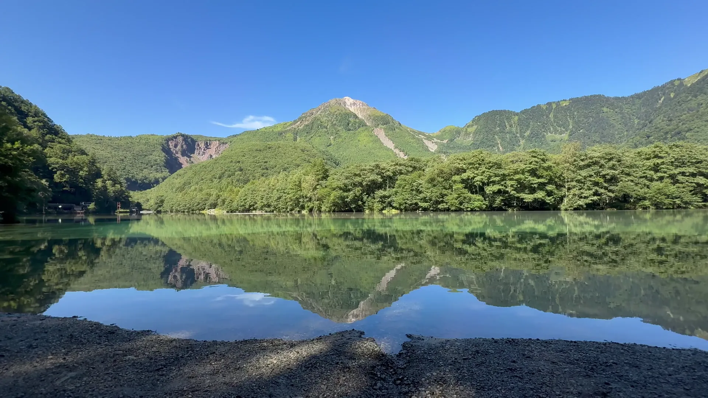

PeoplePPL
PeoplePPL

No. 01 — 03Iceland · Japan · China
People
A visual journal, one country per issue.
Proves d'animació de càrrega, segona ronda
Aquesta pàgina simula l'espera mentre es descarrega el vídeo. Tria una proposta; l'espera es repeteix des del principi i al final arrenca el vídeo.
Espera simulada: